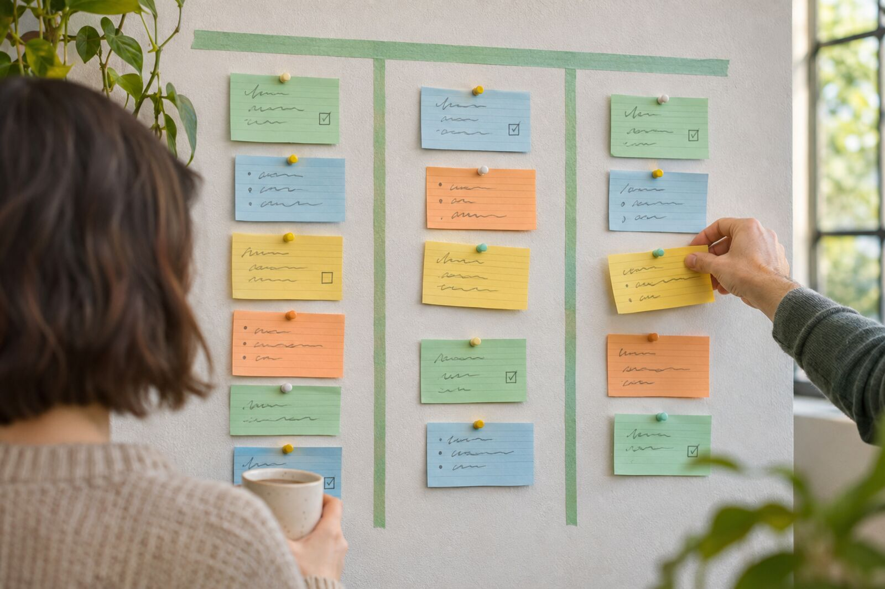

Workshops
Für Unternehmen ab 5 Teilnehmenden: in-house oder online. Gestaffelt nach Teilnehmerzahl bieten wir auch Ermäßigung an.
LEGO® SERIOUS PLAY®
2 Tage
Komplexe Fragen, Ideen und Lösungen werden mit LEGO® greifbar — und damit begreifbar. Nach dem ‚Hand-Hirn‘-Prinzip bauen die Teilnehmenden Modelle und Systeme und planen am Ende selbst einen LEGO® SERIOUS PLAY® Workshop.
Der Workshop gibt den Teilnehmern die praktischen und theoretischen Werkzeuge für einen LEGO® SERIOUS PLAY® Workshop. LEGO® SERIOUS PLAY® ist eine Methode, um komplexe Fragen, Ideen und Problemlösungen zu definieren. Durch greifbare Ergebnisse werden Themen für Menschen besser begreifbar!
Wir fördern das „Hand – Hirn“ Prinzip, um gezielt und anders unseren Fokus auf das Problem zu stellen. Mit LEGO® SERIOUS PLAY® kann man spielerisch komplexe Systeme bauen, um Zusammenhänge besser zu verstehen und einfacher die Lösung zu entwickeln. Am Ende der zwei Tage werden die Teilnehmer als Gruppenarbeit einen LEGO® SERIOUS PLAY® Workshop planen.
Leistungen
- Teilnahmebestätigung LEGO® SERIOUS PLAY® Facilitator Ausbildung
- Hochwertige Workshopunterlagen
- Übungen in Kleingruppen mit Präsentation und Diskussion
- Fotodokumentation
- Hilfreiche Tipps zu Links, Literatur und Tools
- Austausch und Diskussion, Aufbau eines Netzwerks
- Mittagessen, Heiß- und Softgetränke, Obst und Snacks während des Workshops inkl.
Agenda
Tag 1
- Begrüßung und Vorstellung in LEGO®
- Grundprinzipien und Regeln der LEGO® SERIOUS PLAY® Methode
- Einstieg in die Kommunikation und das Bauen von Modellen
- Skill Building verstehen und bauen
- Ableitung von Fragestellungen im Themen-Kontext
- Kommunikation mit Metaphern und Gedankenmodellen lernen
- Erklärung der LEGO® Bauphasen
- Erklärung Gruppenbauphase und Systeme
- Retrospektive mit LEGO® SERIOUS PLAY®
Tag 2
- Start in den Tag und Klärung von Fragen vom Vortag
- Neue Ideen entwickeln mit LEGO® SERIOUS PLAY®
- Klärung von Dokumentationsmöglichkeiten
- Fallbeispiele und Übungen
- Konzeption eigener LEGO® SERIOUS PLAY® Workshops
- Ergebnisse Verwerten
- Retrospektive und Ausblick
- Ausgabe der Zertifikate
Design Thinking
2 TageZwei Tage im Design-Thinking-Modus: Tag eins gehört den Kundenbedürfnissen und dem Research, Tag zwei dem Ideen-Generieren, Prototypen-Bauen und Testen.
Der Workshop gibt den Teilnehmern die Gelegenheit, in zwei Tagen eigene Erfahrungen mit der Arbeitsweise im „Design Thinking Modus“ zu machen und in diesem Zusammenhang auch erste Methodenkenntnisse zu erwerben. Hierbei wird an verschiedenen Themen aus Bereichen aktueller Trends (z.B. Mobilität, Internet of Things) gearbeitet.
Der erste Tag umfasst insbesondere den Bereich Kundenbedürfnisse und kundenfokussiertes Research. Hierbei erarbeiten wir uns Schritt für Schritt das Problemumfeld und lernen die betroffenen Kunden sowie deren Bedürfnisse kennen. Tag zwei steht ganz unter dem Motto Ideen generieren, Prototypen und Testen mit dem Kunden.
Leistungen
- Teilnahmebestätigung
- Hochwertige Workshopunterlagen
- MIRO digital Board Zugang
- Übungen mit Präsentation und Diskussion
- Einbringen von konkreten Beispielen aus dem Berufsalltag möglich
- Digitale Liste mit Links, Videos, Literatur und Tools
- Austausch und Diskussion, Aufbau eines Netzwerks
Agenda
Tag 1
- Begrüßung und Vorstellung
- Sketching – Übersicht des Problemumfelds
- Wer ist unser Kunde und welche Bedürfnisse hat dieser?
- Persona und Value Proposition Canvas
- Techniken zu Interviews und Beobachtungen
- Empathy Map
- Welche Herausforderungen liegen vor unseren Kunden?
- Synthese der Ergebnisse
- „Point of View“ definieren
- Retrospektive und Synthese aus dem Tag
Tag 2
- Start in den Tag und Klärung von Fragen vom Vortag
- Reframing und „How might we“ Fragen
- Ideen generieren – Anwendung verschiedener Techniken
- Prototypen bauen – Low Resolution Prototyping
- Präsentation der Prototypen
- Reflektion „Design Thinking als Arbeitsmethode“
- Übergabe der Teilnahmebestätigungen & digitalen Dokumentation
Scrum Master (PSM I) & Kanban
2 Tage
KI-generiertes BildSchulung mit Workshop-Charakter: das Scrum-Framework praxisnah verstehen, das agile Mindset erleben und die Prinzipien von Kanban kennenlernen.
In dieser 2-tägigen Schulung mit Workshop-Charakter bereiten sich die Teilnehmer auf die Prüfung zum Professional Scrum Master (PSM I) vor und es werden die Prinzipien von Kanban erklärt. Scrum ist eine Balance zwischen verschiedenen Kräften und Aspekten der Kontrolle, um die Effektivität in der Entwicklung oder Prozessen zu erhöhen. Die Rollen, Artefakte und Events bilden das Rahmenwerk „Framework“ für diese Art von Prozesskontrolle.
Unser Anspruch ist nicht nur den agilen Prozess zu verstehen, sondern auch das agile Mindset zu verstehen. Neben der praxisnahen Vermittlung des Scrum Frameworks steht am Ende des Workshops die Zertifizierung zum Professional Scrum Master (PSM I) an.
Leistungen
- Vorbereitung auf den PSM I-Test
- Teilnahmebestätigung
- Hochwertige Workshopunterlagen
- Übungen in Kleingruppen mit Präsentation und Diskussion
- Einbringen von konkreten Beispielen aus dem Berufsalltag
- Fotodokumentation
- Hilfreiche Tipps zu Links, Literatur und Tools
- Austausch und Diskussion, Aufbau eines Netzwerks
- Mittagessen, Heiß- und Softgetränke, Obst und Snacks während des Workshops inkl.
Agenda
Tag 1
- Eigenschaften von Agile und klassischer Vorgehensweise
- Scrum-Werte / Säulen
- Das Agile Manifest
- Scrum Simulation und Übungen
- Das Scrum Framework
- Die Scrum-Rollen: Scrum Master, Product Owner, Entwicklungsteam
Tag 2
- Scrum Ereignisse: Sprint, Sprint-Planning, Daily Scrum, Sprint Review, Sprint Retrospektive
- Scrum Artefakte: Product Backlog, Sprint-Backlog, Inkrement
- Scrum Projekt Simulation: Backlog erstellen, Estimations, Planning Poker, Sprint Backlog
- Scrum Regeln: Definition of Done, Definition of Ready
- Anwendungsgebiete von Scrum
- Burn-down / Burn-up Chart
- Scaled Scrum Überblick
- Prüfungsvorbereitung
Agile DSGVO — DSGVO mit Scrum
3 TageDie Anforderungen der DSGVO treffen auf das Vorgehensmodell Scrum: So wird Datenschutz agil umgesetzt — in einer praxisnahen Simulation mit Werkzeugen für den Alltag.
In diesem 3-tägigen Workshop kombinieren Ihre Trainer erstmals gezielt die Fragestellungen und Herausforderungen der DSGVO mit dem erfolgreichen Vorgehensmodell SCRUM. Es werden einerseits die kritischen Punkte einer Umsetzung der DSGVO dargestellt und auf der anderen Seite agile Methoden nach SCRUM-Framework eingeführt. In Summe eröffnet sich so ein neues Vorgehensmodell die DSGVO agil umzusetzen. Es werden die erlernten Inhalte in einer praxisnahen Simulation aufbereitet und handfeste Werkzeuge für den späteren Einsatz bereitgestellt. Gern gehen die Trainer auf konkrete Beispiele oder Fragestellungen aus Ihrem Berufsalltag ein (bitte vorher angeben).
Was Sie in diesem Workshop lernen: Sie lernen von der Theorie bis zur konkreten Umsetzung, wie DSGVO-Vorgaben mithilfe des SCRUM-Vorgehensmodells effizienter adressiert werden können. Gleichzeitig bietet Ihnen die Expertise der Trainer besonderen Einblick in beide Themenfelder.
In Theorie und Praxis erfahrene Experten haben dieses Seminar entwickelt und geben Tipps, Beispiele und Übungen mit hohem Lern- und Spaßcharakter zum komplexen Sachverhalt. Ebenso legen Sie die Grundlage, um im Anschluss an den Workshop Ihr PSM I-Zertifikat zu erlangen, um dann konkret in Ihrem Unternehmen, Aufgaben in DSGVO-Projekt- und Linienverantwortung zu übernehmen.
Zielgruppe: Dieses Seminar mit konkreten Praxisbezügen richtet sich nicht nur an SCRUM-Neulinge sondern an alle Verarbeiter oder Auftragsverarbeiter in Linien- oder Projektverantwortung zur Umsetzung der DSGVO, in der Einführung neuer bzw. Anpassung von Funktionen der Verarbeitung sowie Datenschutz-affine Beschäftigte oder Datenschützer, die eine Umsetzung, z.B. von Löschkonzepten begleiten und erste konkrete Löschungen planen. Es eignet sich sowohl um „Umsetzer“ als auch Produkt Owner oder Datenschutz-Verantwortliche, die einen tieferen Einblick in die Umsetzung gewinnen wollen.
Leistungen
- Zwei Trainer vor Ort (SCRUM sowie DSGVO-Experten)
- Vorbereitung auf den PSM I-Test inkl. Voucher für online Prüfung im Nachgang zu Workshop
- Konkrete Handlungsempfehlungen zur Umsetzung der DSGVO-Vorgaben mit SCRUM-Vorgehensmodell
- Teilnahmebestätigung
- Hochwertige Workshopunterlagen
- Übungen in Kleingruppen mit Präsentation und Diskussion im Auditorium
- Einbringen von konkreten Beispielen aus dem Berufsalltag im Datenschutz möglich
- Fotodokumentation
- Hilfreiche Tipps zu Links, Literatur und Tools
- Austausch und Diskussion, Aufbau eines Netzwerks
Information Security Awareness
1 TagPhishing, Social Engineering, Identitätsdiebstahl: Ihre Mitarbeitenden lernen, Bedrohungen zu erkennen und als ‚Human Firewall‘ professionell zu reagieren.
In diesem eintägigen Workshop werden Sie die Bedeutung von Informationssicherheit sowie das richtige Bewusstsein für Cyberbedrohungen und Informationssicherheitsrisiken vermittelt bekommen. Dieses Wissen wird Sie dazu befähigen, sowohl sich selbst als auch Ihre Firma effektiver gegen Cyberbedrohungen wie z.B. Phishing, Social Engineering, Credential-Stealing, Account-Hijacking, Identitätsdiebstahl und Co. zu schützen.
Zielgruppen: Dieses Seminar richtet sich an alle Mitarbeiter jeglicher Organisationen, welche Berührungspunkte mit IT-Systemen und Informationen haben. Hierunter fallen sowohl diejenigen mit IT Kenntnissen, als auch diejenigen ohne Vorkenntnisse. Das Ziel besteht hierbei darin, das Bewusstsein der Belegschaft zu schärfen, um die Eintrittswahrscheinlichkeit und Auswirkung von potentiellen Informationssicherheitsrisiken zu minimieren.
Was Sie in diesem Workshop lernen: Sie erlernen theoretisches Grundlagenwissen wie z.B. Motivation und Psychologie der Hacker, Angriffsszenarien und Techniken welche an reellen Beispielen aus der Praxis erörtert werden. Darüber hinaus lernen Sie, wie Sie suspekte Verhaltensweisen und potentiell bösartige Aktivitäten und Situationen erkennen und sich als „Human Firewall“ angemessen verhalten und professionell reagieren.
Leistungen
- Teilnahmebestätigung
- Hochwertige Workshopunterlagen
- Übungen in Kleingruppen mit Präsentation und Diskussion
- Leicht und verständlich vermitteltes Expertenwissen
- Verbildlichung von potentiellen Bedrohungsszenarien
- Konkrete und wirksame Handlungsempfehlungen
- Austausch und Diskussion, Aufbau eines Netzwerks
- Mittagessen, Heiß- und Softgetränke, Obst und Snacks während des Workshops inkl.
Agenda
Tag 1
- Begrüßung und Vorstellung
- Das richtige Mindset und Haltung
- Gängige Cyberbedrohungen und neue Trends
- Fallbeispiele aus der Praxis
- Potentielle Angriffsszenarien
- Geeignete Sicherheitsmaßnahmen
- Verhalten um Risiken zu minimieren
- Retrospektive und Synthese aus dem Tag
- Fragen und Antworten
BAIT Compliance
2 TageDie Bankaufsichtlichen Anforderungen an die IT der BaFin — organisatorisch und technisch erklärt, von der IT-Strategie bis zur Auslagerung.
In diesem zweitägigen Workshop werden Sie den Hintergrund sowie die Bedeutung der regulatorischen BAIT Anforderungen (Bankaufsichtliche Anforderungen an die IT) der BaFin (Bundesanstalt für Finanzdienstleistungsaufsicht) kennenlernen. Diese regulatorische Anforderung gilt für alle Institutionen, welche eine Banklizenz von der BaFin besitzen und ist immer häufiger Gegenstand von externen Audits seitens der BaFin selbst oder beauftragten Wirtschaftsprüfungsgesellschaften.
Zielgruppen: Dieses Seminar richtet sich an leitende Bankmitarbeiter aus dem mittleren und oberen IT Management wie z.B. Chief Information Officer, (Chief) Information Security Officer(s), Risk Manager, Compliance Manager aber auch Personal aus technischen Abteilungen und Funktionen wie z.B. Identity & Access Management, Anwendungsentwicklung, IT Betrieb (Operations) und dem IT Vendor Management.
Was Sie in diesem Workshop lernen: Dieser Workshop geht konkret auf die organisatorischen und technischen Anforderungen der BAIT ein. Es werden alle Punkte aus den Bereichen IT Strategie, IT Governance, Informationsrisikomanagement, Informationssicherheitsmanagement, Berechtigungsmanagement, IT Projekte zur Anwendungsentwicklung, IT Betrieb inkl. Datensicherung und Auslagerung und Fremdbezug von IT Services beleuchtet.
Leistungen
- Teilnahmebestätigung
- Hochwertige Workshopunterlagen
- Übungen in Kleingruppen mit Präsentation und Diskussion
- Leicht und verständlich vermitteltes Expertenwissen
- Verbildlichung von potentiellen Bedrohungsszenarien
- Konkrete und wirksame Handlungsempfehlungen
- Austausch und Diskussion, Aufbau eines Netzwerks
- Mittagessen, Heiß- und Softgetränke, Obst und Snacks während des Workshops inkl.
Agenda
- Hintergrund der regulatorischen Anforderungen
- Treiber
- Geltungsbereich
- Geschäftsauswirkungen
- Bankenaufsichtliche Anforderungen an die IT
- 1. IT-Strategie
- 2. IT-Governance
- 3. Informationsrisiken
- 4. Informationssicherheit
- 5. Berechtigungen
- 6. Anwendungsentwicklung
- 7. IT-Betrieb & Datensicherung
- 8. Auslagerungen
- Methoden zur Bestimmung des Reifegrades
- 1. Bestimmung der Compliance
- 2. Rolle des Berichtswesens
- 3. Mögliche Analyse-Werkzeuge
- Implementierung
- Rollen und Verantwortlichkeiten
- Interne Governance Strukturen
- Technische Maßnahmenpläne
- Überprüfung durch Audits
KI-Schulungen für Unternehmen
NeuWas ist KI, was ist Machine Learning, wohin entwickeln sich KI-Agenten? Wir erklären die Grundlagen verständlich und zeigen kleine Anwendungsfälle, bei denen KI im Arbeitsalltag schnell hilft.
Leistungen
- Grundbegriffe und aktuelle Trends
- Anwendungsfälle aus der Praxis
- In-house oder online
Weitere Formate
- Management 3.02 Tage
- ITIL® V4 Foundation2 Tage
- DevOps EXIN2 Tage
- Google Design Sprint2 Tage
- Tech — SQL Basic2 Tage
- Tech — Java Basic2 Tage
- OKR1 Tag
- Scrum Basic, Lean Startup & Kanban1 Tag
Lassen Sie uns über Ihren Workshop sprechen.
In-house oder online · Communicate, Cultivate and Innovate